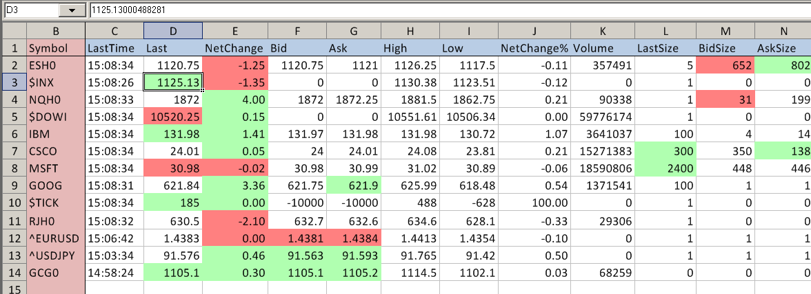

Getting Quotes
- Quote Board
- Introduction
- Opening Quote Board
- Setting Symbols
- Saving/Loading Symbol Lists and Importing Symbols
- Setting Colors
- Setting Fields to Display
- Futures Contract Rollover
- Changing Symbol of a Chart or Trade DOM
- New Daily High and Low Highlighting and Alert
- Adjusting Column Widths
- Attaching and Detaching Quote Board
- Always Visible or Always on Top
- Changing Quote Board Font
- Setting Comments on Symbols
- Quote Board Label Rows
- Quote Board Scroll Bars
- Delete Rows
- Insert Rows
- Move Symbol
- Quote Board Sorting
- Quote Board Not Visible
- Quotes on Spreadsheets
- Field Descriptions
Quote Board
Introduction
Sierra Chart provides a Quote Board feature. A Quote Board provides real-time and current daily quote data for a list of symbols. The symbols can be selected to change the symbol of the associated chart. Open Order and Position data for the symbols is provided on the Quote Board as well.
{kind=link}
Symbols that provide historical data only and not streaming real-time or delayed data, will only provide zero values on the Quote Board.
Theupdate interval of the Quote Board is controlled through a setting and updates at specific time intervals. Global Settings >> General Settings >> Quote Board Update Interval in Milliseconds. The default is 800 ms. We do not recommend making this too low of a value as it will increase CPU usage.
Opening Quote Board
To open a Quote Board, select File >> New Quote Board .
A Quote Board is associated with the active Chartbook at the time it is opened. If a Chartbook is not already open, when you open a new Quote Board, then a Chartbook will be created.
Setting Symbols
To set the symbols on the Quote Board, select Settings >> Set Symbols on the menu on the Quote Board window.
To add a symbol to the end of the list of symbols, select the last row in the list of symbols and type the symbol into the box below the list or press the Find button and select a symbol from the list of available symbols. To add a symbol anywhere else in the list, click at the location in the list where you want to add the symbol and press the Add button. After inserting a blank row into the list, type the symbol into the box below the list or press the Find button .
In the case of when using the Sierra Chart Quote Board, you do not need to prefix symbols with a / or # when adding them to the list of symbols, unlike when you enter Quote Request symbols on a Spreadsheet.
The list of symbols for a Quote Board is specific to each individual Quote Board window.
{kind=link}
Select a symbol in the list of symbols and use the Move Up or Move Down buttons to move the symbol up or down in the list.
Saving/Loading Symbol Lists and Importing Symbols
To easily save and load a set of symbols to and from a text file respectively, select File >> Save Symbol List or File >> Load Symbol List on the Quote Board menu.
The default file extension is SymbolList. The files are plain text files. If you are loading a list of symbols from other sources, the symbols can be separated with a comma character, a tab character or a new line character.
The Settings >> Set Symbols window also has Import and Export commands for reading and saving a list of symbols from and to a text file, respectively. The symbols in this text file can be separated with a comma character, a tab character or a new line character.
Setting Colors
To set the colors for the Quote Board, select Settings >> Graphics Settings on the menu on the Quote Board window. The relevant color settings begin with Quote Board in the list of Colors and Widths.
- Quote Board: Background: This is the background color of the Quote Board window.
- Quote Board: Blank Row Background: This is the background color for a blank row.
- Quote Board: Label Row Background: This is the background color for a row used as a label.
- Quote Board: Foreground/Text: This is the color for the quote board text.
- Quote Board: Label Row Foreground/Text: This is the color for the label text.
- Quote Board: Price Change Up: This is the color for DailyChange, DailyChange%, TradeDirection, ChangeFromOpen, Non-Sim Position field values which are positive.
- Quote Board: Price Change Down: This is the color for DailyChange, DailyChange%, TradeDirection, ChangeFromOpen, Non-Sim Position field values which are negative.
- Quote Board: New High Highlight: This is the background color for the high price of the day when a new high is reached.
- Quote Board: New Low Highlight: This is the background color for the low price of the day when a new low is reached.
- Quote Board: Alert Triggered Highlight: This is the highlight color for a symbol which has an alert condition which is true.
- Quote Board: Gridlines: This is the color for gridlines on the Quote Board.
- Quote Board: Selected Symbol: This is the background color for the selected symbol.
- Quote Board: Selected Border Highlight: This is the color for the border around the selected cell in a Quote Board.
Setting Fields to Display
To set the fields to display and the order of those fields, select the Settings >> Set Fields on the menu on the Quote Board window.
The Quote Board field configuration is specific to each individual Quote Board window. For a new Quote Board window, the initial field configuration will be based upon the global Quote Line field configuration for Quote Spreadsheets which is set through Global Settings >> Quote Spreadsheet Settings.
For a description of the available fields, refer to Field Descriptions.
Futures Contract Rollover
When a Quote Board is opened, any expired futures symbols will be automatically rolled over to the current contract month if Settings >> Auto Rollover Futures Symbols on the Quote Board menu is enabled which is the default. This occurs when the Quote Board is opened as part of a Chartbook.
The actual rollover date for a particular symbol is controlled by the rollover rules for the symbol in the Global Symbol Settings. There are very specific date based rollover rules for each futures contract symbol which are based upon the exchange rules.
The Detect Rollover Of Current Futures Contracts Symbols Based On Real Time Volume setting has no effect upon the rollover date for the Quote Board.
To manually rollover a symbol, right-click anywhere along the Quote Line for the symbol on the Quote Board, and select Roll Forward Futures Symbol. You also have the ability to roll back a symbol by using Roll Back Futures Symbol.
All future symbols in the Quote Board can be rolled over at any time by selecting Settings >> Rollover Futures Symbols Now on the Quote Board menu.
Changing Symbol of a Chart or Trade DOM
To change the symbol of a chart or Trade DOM to the selected Quote Board symbol, it is first necessary to establish a common link between a Quote Board and the charts and/or Trade DOMs.
To do this, set a nonzero link number on the Quote board by selecting Settings >> Set Chart Link on the menu on the Quote Board window.
To set the same link number on a chart or Trade DOM, select Chart >> Chart Settings >> Linking from the menu. In the Chart Linking >> Link Number list box, select the same Link Number as is set for the Quote Board. Press OK. Any number of charts or Trade DOMs can use the same link number so they are changed to the same selected symbol on the Quote Board.
For complete documentation about Chart Linking, refer to Chart Linking.
Simply left click on the symbol in the Symbol column on the Quote Board to change the symbol of the linked charts or Trade DOMs. The selected symbol will be highlighted on the Quote Board. Either the symbol field will be highlighted or the entire Quote Board line for the symbol will be highlighted if Settings >> Highlight All Fields is enabled on the Quote Board menu.
After left clicking on one of the lines on the Quote Board, it is then possible to use the Up Arrow key and Down Arrow key on your keyboard to move up and down through the list of symbols on a Quote Board.
You will not want to link a Quote Board to a chart that uses the Trade and Current Quote Symbol, unless you specify a Trade and Current Quote Symbol in the Global Settings >> Global Symbol Settings for the Symbols you are using in the Quote Board. Otherwise, what you will find is that the Trade and Current Quote Symbol will remain with the chart and only the main symbol of the chart changes.
{kind=link}
Quote Board Linking to a Chart and Chart Drawings
If you have used one of the Drawing Tools on the chart, make sure that Chart >> Chart Settings >> Chart Drawings >> Show Chart Drawings for Different Symbols is disabled to prevent Chart Drawings for other symbols from displaying on the chart for a different symbol that you have changed to from the Quote Board.
For more information, refer to Show Chart Drawings for Different Symbols.
Quote Board Linking Across Chartbooks
Beginning with version 1338 it is supported for a Quote Board for one Chartbook to be able to link to charts in another Chartbook. Follow these steps.
- Open a new Quote Board or go to an existing Quote Board and enable Settings >> Always Visible Across Chartbooks.
- Set a nonzero Link Number on the Quote board by selecting Settings >> Set Chart Link on the menu on the Quote Board window. Select one of the Link Numbers ( L#).
- Go to the Chartbook you want to link to. Go to the particular Chart or Trade DOM you want to link to.
- Select Chart >> Chart Settings >> Linking from the menu. In the Chart Linking >> Link Number list box, select the same Link Number as is set for the Quote Board.
- Press OK.
- Simply left click on the symbol in the Symbol column on the Quote Board to change the symbol of the linked charts or Trade DOMs. Selecting a symbol on the Quote Board is only going to affect the charts in the active Chartbook with the same Link Number as the Quote Board is set to.
New Daily High and Low Highlighting and Alert
The Sierra Chart Quote Board will highlight a new Daily High or Low on the quote board when the High and/or Low fields are displayed. The High and Low fields are directly highlighted.
The color is controlled by the Quote Board: New High/Low Highlight color setting set through the Global Settings >> Graphics Settings - Global or Chart >> Graphics Settings windows. Refer to Graphics Settings for complete details.
The highlight will remain for approximately 30 seconds.
An optional alert sound can also be enabled through Alerts >> Alert Number For New High/Low on the Quote Board menu. Select a particular Alert Number that you want to use for a new Daily High or Low. To configure that particular Alert Number, refer to Alert Sound Settings.
Adjusting Column Widths
To adjust the width of a column on the Quote Board, move your Pointer to the column header line at the top of the Quote Board window that displays the column names.
After this move the Pointer to the right side of the column that you want to adjust. You will notice that the dividing area between columns will then change to a different color (normally red). Left click with the Pointer to start the adjustment operation and move left or right, then release.
Attaching and Detaching Quote Board
A Quote Board window is a floating window which by default is owned by the main Sierra Chart window and will remain on top of the main window. It can be freely moved around outside of the main window frame.
To detach a Quote Board from the main Sierra Chart window and allow the Quote Board to be completely independent so that it can be moved to other monitors or anywhere on your screen space, select Settings >> Attach/Detach Window on the Quote Board menu. Select that command again to reattach it to the main Sierra Chart window.
Always Visible or Always on Top
A Quote Board can be made always visible no matter which Chartbook is active, by enabling Settings >> Always Visible Across Chartbooks.
If you want the Quote Board to be always on top of other windows on your system, then enable Settings >> Always on Top. This is only supported when a Quote Board is detached. To detach a Quote Board, refer to Attaching and Detaching Quote Board.
Changing Quote Board Font
The font used for the text on the Quote Board can be changed.
To change the Quote Board Font, select Global Settings >> Graphics Settings >> Fonts.
For complete documentation, refer to Fonts on the Graphics Settings page.
Setting Comments on Symbols
It is supported on a Quote Board to set up to 10 comments per Quote Line for a symbol. Follow the instructions below.
- On the Quote Board menu select Settings >> Set Fields.
- In the Available Fields list, there will be the fields Comment1 through Comment10. Add the comment fields that you want for a Quote Line.
- Press OK.
- Go to one of the Comment# fields you added for a quote line for a symbol on the Quote Board. Left click on that field two times.
- An edit box will display. Type the Comment in the edit box and press OK.
Quote Board Label Rows
Quote Boards support custom Label Rows to identify groups of symbols. Follow the instructions below.
- On the Quote Board menu select Settings >> Set Symbols. This will display the symbols list window.
- On the right side of that window there is the list of symbols. Select the line where you want to insert a label.
- Press the Add Label button. A new entry will be added that is prefixed with Label: .
- Make sure that line is selected in the list of symbols and in the edit box below the list of symbols, type the label name that you want.
- Press the Close button when done. The label will then be displayed on the Quote Board.
- To set the color for a label row, on the Quote Board menu select Settings >> Graphics Settings. Set the Quote Board: Label Row Background Color.
{kind=link}
Quote Board Scroll Bars
The vertical scroll bar on a Quote Board will display when there are more lines in the Quote Board than can be displayed based on the size of the window. The number of quote lines can be adjusted through Setting Symbols.
To remove the scroll bar by adjusting the size of the Quote Board window, use the standard Windows functionality to grab the side or corner of the window and drag it to make the window larger.
Likewise for the horizontal scroll bar, that will display when there are more fields displayed and the width of those fields is greater than can fit in the current window size.
There are several solutions to this. Make the window larger as explained above. Adjust the width of the columns. Or, remove fields. To do this, refer to Setting Fields to Display.
Delete Rows
One or more rows in the quote board can be selected and deleted. One row can be selected by clicking on it and multiple rows can be selected by holding Ctrl or Shift Key while clicking on a row. The selected rows can then be deleted in the following ways:
Insert Rows
One or more rows can be inserted above the first selected row in the Quote Board.
Inserting is not supported when Quote Board column sorting is being used. Sorting can be disabled, by left clicking with your Pointer on the header of any of columns until there is no longer an arrow shown on that header.
One row can be selected by left clicking on it and multiple rows can be selected by holding Control or Shift Key while left clicking on a row. Rows can then be inserted in the following ways:
Note that the number of rows inserted is equal to the number of rows selected.
Move Symbol
Keyboard shortcuts can be assigned to move a selected symbol up and down. Keyboard shortcuts Move Symbol Up and Move Symbol Down can be configured by selecting Global Settings >> Customize Keyboard Shortcuts and selecting the QuoteBoard Keyboard Shortcuts. For example, if U is assigned to Move Symbol Up, then pressing the U key in the quote board window will move the selected symbol up.
Refer to index.php?page=doc/GlobalSettingsMenu.html#CustomizeKeyboardShortcuts for instructions to assign a keyboard shortcut.
Note that the assigned keyboard shortcut key is global and cannot be used for any other functionality even if the quote board window is closed. Refer to Keyboard Shortcuts are Global and Affect All Windows for information.
Quote Board Sorting
The columns of a Quote Board can be sorted alphabetically or numerically either ascending or descending. Sorting can also be disabled. When sorting is enabled for a particular column, it does increase the CPU usage of the Quote Board. Sorting should only be used when necessary.
Left clicking on a column header, (Symbol, Last, Bid, Ask, ...) on the Quote Board window will either enable sorting ascending, enable sorting descending, or disable sorting.
When an up arrow is displayed on the column header, the sorting is enabled and ascending. When a down arrow is displayed on the column header, the sorting is enabled and descending. When there is no arrow displayed, on any of the Quote Board columns, then sorting is disabled.
Quote Board Not Visible
If a Quote Board is not visible, then select Window >> Reset Windows. It should then appear near the top left.
If it does not appear, close the Chartbook with File >> Close Chartbook and reopen it.
To make the Quote Board appear on the taskbar, then detach it. You can do that through Settings >> Attach/Detach Window from the Quote Board menu.
Quotes on Spreadsheets
Introduction
{kind=link}
Symbols can be entered into a Sheet in a Spreadsheet window to obtain detailed quotes that are continuously updated while connected to the data feed. This is called a Quote Spreadsheet.
The symbol entered to request a quote needs to follow the format required by the Data or Trading service Sierra Chart is currently connected to.
The advantage with a Sierra Chart Quote Spreadsheet is that they are highly customizable. You are using a fully functional Spreadsheet that can contain Excel formulas and can perform calculations on the Quote data. Therefore, you can enter custom formulas to perform many different kinds of calculations that you may require.
Creating a Spreadsheet and Getting Quotes
- Sierra Chart needs to be connected to the real-time data feed to get continuously updating quotes. Select File >> Connect To Data Feed on the menu to connect if not already connected. If this command is disabled, then this means Sierra Chart is already connected to the data feed.
- Create a new Spreadsheet or open an existing Spreadsheet. Select File >> New Quote Spreadsheet on the menu to create a new Spreadsheet.
- For more information about Spreadsheets, refer to the Working with Spreadsheets documentation page.
- To open an existing Spreadsheet, select File >> Open Spreadsheet.
- Go to the Spreadsheet window and make sure the Spreadsheet >> Quote Spreadsheet menu option is checked.
- Right-click with the Pointer on a row on the Spreadsheet where you want to insert a Quote Line and select Find Symbol and Insert on the shortcut menu. This will give you a list of many of the symbols available for the Data or Trading service you are using. Simply select one and press Insert.
If the symbol is not listed, then manually type the symbol into the Selected Symbol box. The symbol needs to follow the symbol format used by the Data or Trading service you are using.
You can also left click on the row on the Spreadsheet and select Spreadsheet >> Find Symbol and Insert from the top level menu. - Alternative Quote Request Entry Method: Left click two times in column A in the row on a Sheet where you want to enter a Quote Line. Manually enter the symbol and press OK.
A symbol has to be in rows 1 to 150 and has to be in one of the first 10 Sheets in the Spreadsheet. They cannot be entered just anywhere on a Spreadsheet. With cell references, you can use the data anywhere on a Spreadsheet.
Quote Spreadsheet Settings
To set which fields to display along a Quote Line on a Spreadsheet and to configure Color and Sort settings, refer to the Quote Spreadsheet Settings documentation page.
Number Format
For a Quote Line on a Spreadsheet, all numeric values are automatically formatted with the appropriate number of decimal places.
Prices are formatted according to the Price Display Format setting in Global Settings >> Symbol Settings for the symbol or symbol pattern.
Volume values are typically formatted with no decimal place.
If you want to change the format for prices, then alter the Price Display Format setting in Global Settings >> Symbol Settings for the symbol or symbol pattern. For further details, refer to Global Symbol Settings.
Color Coding
The Bid, Ask, Bid Size, Ask Size, Last, High, Low, Last Size, and Net Change Fields can be color coded based upon if they are Increasing, Decreasing or not changing. To enable this color coding and to set these colors, select Global Settings >> Quote Spreadsheet Settings >> Color Settings on the menu. Enable the option Enable Coloring of Quote Request Fields. Set the color controls as you require.
Scrolling and Locking Header Row and Symbol Column
Scrolling
The Quote Spreadsheet can be scrolled by using either the horizontal or vertical scrollbars on the edge of the Spreadsheet window.
Locking Header Row
Select a cell on the header line and select Spreadsheet >> Fix Row on the menu to fix the header row and keep the header line from scrolling while the Spreadsheet is scrolled vertically.
Locking Symbol Column
Select a cell in the A column or click on the A column title and select Spreadsheet >> Fix Column on the menu to fix this column and prevent the symbol column from scrolling off the window when scrolling through the other columns.
Opening or Activating a Chart for a Quote Line
When you select any cell along a Quote Line on a Spreadsheet, then select Spreadsheet >> Open Historical Chart or Spreadsheet >> Open Intraday Chart on the menu and the symbol for the Quote Line will be opened as a Historical or an Intraday Chart respectfully, or be activated if the chart is already open.
You can also right click on any cell along a Quote Line to access these commands.
Sorting
In Quote Spreadsheets it is supported to sort Quote Lines based on a selected Quote Line field. For example, you may want to sort based upon the Daily Change % field.
Follow the step-by-step instructions below to configure sorting.
- Select Global Settings >> Quote Spreadsheet Settings >> Sort Settings.
- Set the Field to Sort By to the Quote Line field you want to sort by. Select No Sorting to disable sorting.
- Set the Sort Order to the either Ascending or Descending.
- If you want to include additional Sheet columns in the rows to be sorted than are normally outputted by a Quote Line, then set the Sort Range >> Last Column to the last column to include.
Otherwise, this is not necessary because Sierra Chart sets the number of columns to sort to the number of Quote Line fields being outputted. Only if the Last Column is greater than number of fields outputted, will it increase the number of columns to sort. - Press OK.
Field Descriptions
The following are the descriptions for the fields for both Quote Boards and Quote Spreadsheets.
- Symbol: This is the symbol for the Quote Line. This will be an abbreviation used by the Data or Trading service to represent the stock, futures contract, index, forex market, CFD, option contract, or cryptocurrency.
- Last: This is the last trade price for the symbol.
- Last Size: This is the size/quantity of the last trade.
- Last Time: This is the time of the last trade. This is in the Time Zone setting Sierra Chart is set to.
- Trade Direction: This field either will be a + or a -. This indicates whether the last trade received from the data feed was at a higher price (+) or lower price (-) than the previous trade. If the price did not change, then the previous Trade Direction is displayed/maintained.
It is important to be aware that this field can look misleading when comparing visually to the Last trade price because the Last trade price does not update visually at every single trade but on a timer instead. So all of the trades are not going to be visible. - Settlement Price: Previous days closing price. Depending upon the particular data feed being used, if there is a settlement price provided, this is going to be the official settlement price. The settlement price is calculated by the exchange using a formula. It is not the final last trade price of the day trading session necessarily. This is important to understand.
The Settlement Price is also not necessarily going to be evenly divisible by the Tick Size (minimum price increment) for the symbol. So this can result in a Daily Change value which is off from the tick size.
If you want to control what is considered the Settlement Price and calculate for example the Daily Change according to a different point in time, it is necessary to use an Intraday chart set to Daily bars and using Custom Session Times. Make sure the Chart Header is set to display the Bar Price Change field so you can view it. - Daily Change: The Daily Change is the difference between the Last trade price and the Settlement Price. Refer to the Settlement Price description for an understanding of what the Settlement Price is. If the Daily Change is not correct, then you need to check to see what the Settlement Price is.
If that is not correct, then contact your Data or Trading service provider about that. The Settlement Price is also called the Previous Close and that price value can be viewed when a chart is open through Window >> Current Quote Window.
With some Data or Trading services it might help to reconnect to the data feed to get the current and correct Settlement Price. When using a Sierra Chart provided data feed, it is not necessary to reconnect.
When an updated Settlement Price is provided at the end of the trading day from the exchange, then it is normal and correct for the Daily Price Change to then be closer to 0 at that time and shortly thereafter. Therefore, you are not going to see the Daily Price Change representing what the price change was during the trading day, at the close of the trading day and during the evening. It also needs to be understood, that an exchange can send through a settlement price before the final close of the trading day. In this case, this will be a preliminary settlement. The CME sends multiple settlement prices through. - Bid: This is the current Bid price.
- Ask: This is the current Ask price.
- Bid Size: This is the quantity of contracts/shares to be bought at the Bid price.
- Ask Size: This is the quantity of contracts/shares to be sold at the Ask price.
- Number Trades: This is the number of trades for the trading day. If this field is not supported by the Data/Trading service, this is the number of trades since connecting to the data feed.
- Bid Ask Spread: This the a difference between the Ask and Bid prices expressed in ticks. The Tick Size for the symbol is set through the Global Symbol Settings. Therefore, it is important to understand what the Tick Size is for the symbol as it is set in the Symbol Settings when understanding the Bid Ask Spread.
- High: This is the Daily High price for the current day.
- Low: This is the Daily Low price for the current day.
- Open: This is the Daily Open price for the current day.
- Volume: This is the daily trade volume. It could represent a trading session shorter than a single day depending upon the particular symbol and the particular Data or Trading service being used.
It is the number of shares or contracts traded within the day. Or it could be the number of price updates in the case of cash Forex markets and indexes. For additional information, refer to Volume Data. - Trade Indicator: If the data feed provides a trade indicator, it will be displayed in this field. This is data feed specific. This is going to usually be an alphabetic code.
- Open Interest: This only applies to futures contracts and is the current open interest as reported by the exchange. This is the number of outstanding futures contracts.
- Percent from High: The Daily Range is calculated as the Daily High minus the Daily Low. If the Daily Range is zero, then 0 is returned. If the Daily Range is nonzero, then Percent from High is calculated as the difference of Daily High minus Last Trade Price, divided by Daily Range, multiplied by 100.
- Percent from Low: The Daily Range is calculated as the Daily High minus the Daily Low. If the Daily Range is zero, then 0 is returned. If the Daily Range is nonzero, then Percent from Low is calculated as the difference of Last Trade Price minus Daily Low, divided by Daily Range, multiplied by 100.
- Daily Change Percent: This is the Daily Change as a percent. Refer to the Daily Change description for more details as to how the Daily Change is calculated.
Daily Change Percent = 100 * (DailyChange / SettlementPrice)
If the SettlementPrice is 0 which indicates it is not available, then Daily Change Percent will be 0. - Change from Open: This is the difference between the Last trade price and the Daily Open price.
- Buy Rollover Interest: This is the buy (long positions) rollover interest as reported by the Trading service. This only applies to cash Forex and CFD markets.
- Sell Rollover Interest: This is the sell (short positions) rollover interest as reported by the Trading service. This only applies to cash Forex and CFD markets.
- Shares Outstanding: This is the number of shares outstanding. This only applies to stock/equity symbols. This field is only available if the data feed provides it.
- Open Buy Quantity (Non-Simulated): This is the total quantity for open Buy orders for the Symbol. This only applies to non-simulated orders.
- Open Sell Quantity (Non-Simulated): This is the total quantity for open Sell orders for the Symbol. This only applies to non-simulated orders.
- Position (Non-Simulated): This is the current non-simulated Trade Position quantity for the symbol. For more information, refer to the Trade Positions Window.
- Inverse Last: This is 1.0 divided by the Last trade price.
- Strike Price: In the case of an option symbol, this is the strike price of the particular contract.
- Last Trading Date: This is the last trading date for a futures contract.
- Name: This is the descriptive name of the symbol. In the case of stocks, this will be the company name.
- Earnings Per Share: This is the earnings per share for equity/stock symbols.
- Price/Earnings Per Share: This is the ratio of the current price and the earnings per share for equity/stock symbols.
- Comment1: Refer to Setting Comments on Symbols
- Comment2: Refer to Setting Comments on Symbols
- Comment3: Refer to Setting Comments on Symbols
- Comment4: Refer to Setting Comments on Symbols
- Comment5: Refer to Setting Comments on Symbols
- Comment6: Refer to Setting Comments on Symbols
- Comment7: Refer to Setting Comments on Symbols
- Comment8: Refer to Setting Comments on Symbols
- Comment9: Refer to Setting Comments on Symbols
- Comment10: Refer to Setting Comments on Symbols
- Alert: This text field is related to Symbol Alerts. It indicates the number of Symbol Alerts for the symbol of the Quote line that have been set up and enabled (E) and the number of times the Symbol Alerts have been triggered for the symbol (T). Otherwise, it is blank.
- Trade Date: This is the trading date for the last trade of the symbol. This field may not be available with some data feeds. This will be the actual trading day date. For example, Sunday evening will display a date of Monday.
- Open Position Profit Loss: This field only applies to the Study Summary window. It displays the currently Open Position Profit or Loss for the Symbol and Trade Account the chart is set to.
- Daily Profit Loss: This field only applies to the Study Summary window. It displays the Daily Profit/Loss for the Symbol and Trade Account the chart is set to.
- Change From Open Percent:This is Change from Open as a percent. Change from Open is calculated as the difference between the Last trade price and the Daily Open price
Change From Open Percent = 100 * (Last Trade Price - Daily Open / Daily Open)
- Daily Range:This is the daily range and it is calculated as the Daily High minus the Daily Low
- Trading Status:This is the trading status.
- Currency Value per Tick:This is the currency value per tick for the symbol.
- Currency:This is the currency code for the symbol.
- Currency Value per Points:This is the currency value per point for the symbol.A Point is the smallest price increment change that can occur on the left side of the decimal point.A Tick is the smallest price increment change that can occur on the right side of the decimal point.
Currency Value per Points = Currency Value per Tick / Tick Size
- Daily Range per Ticks:This is the daily range in ticks.
Daily Range per Ticks = Daily High - Daily Low / Tick Size
- Daily Range in Currency:This is the daily range in currency value.
Daily Range per Currency = (Daily High - Daily Low) * Currency Value per Tick / Tick Size
- Tick Size: This is the Tick Size for the symbol. This value comes from the Global Symbol Settings for the symbol.
- Imbalance Direction: The following information is from NASDAQ. The market side of the order imbalance.
- "B" = Buy imbalance
- "S" = Sell imbalance
- "N" = No imbalance
- "O" = Insufficient orders to calculate
- Cross Type: The following information is from NASDAQ. The type of Nasdaq cross for which the NOII message is being generated.
- "O" = Nasdaq Opening Cross
- "C" = Nasdaq Closing Cross
- "H" = Cross for IPO and halted / paused securities
*Last modified Tuesday, 06th June, 2023.